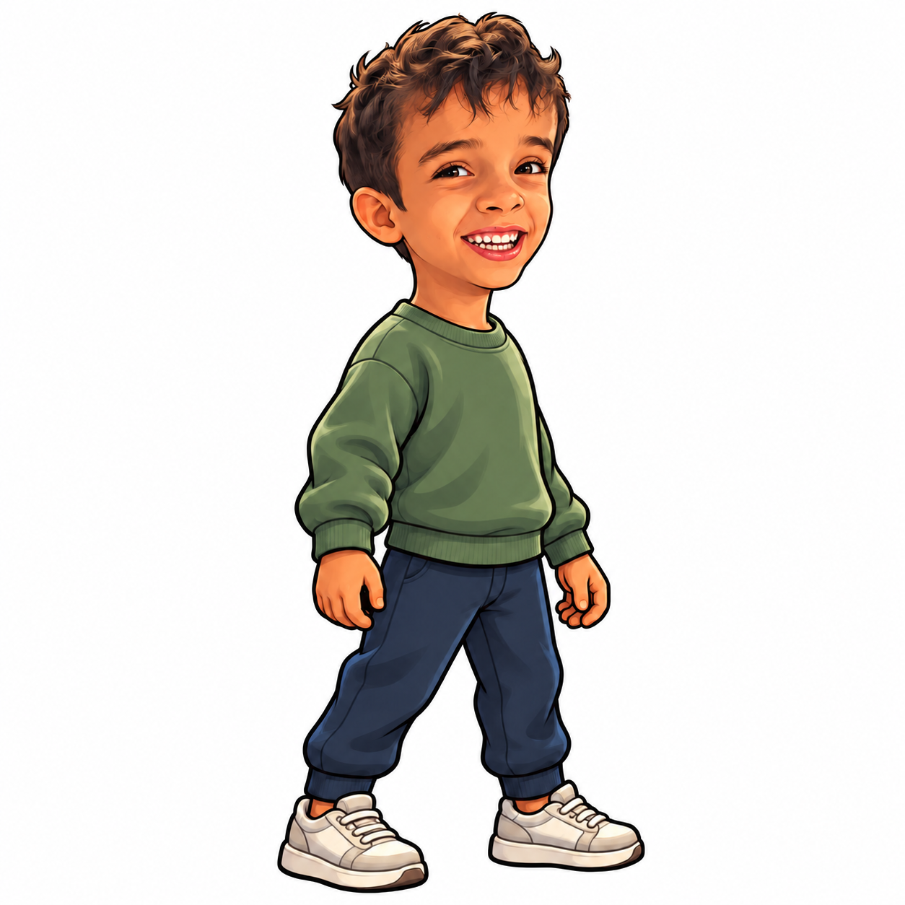
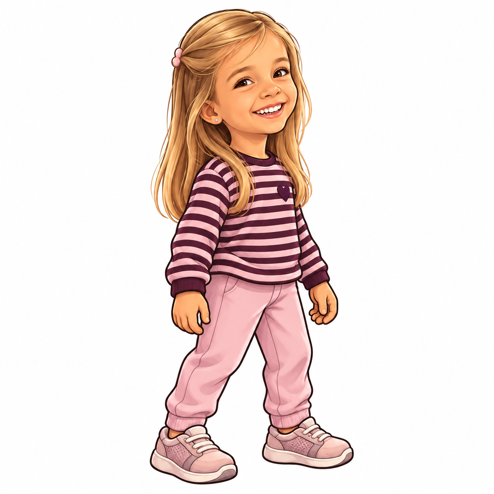
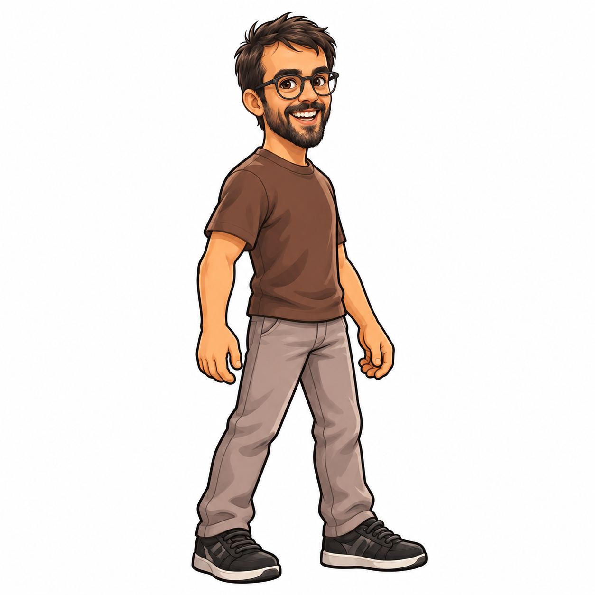
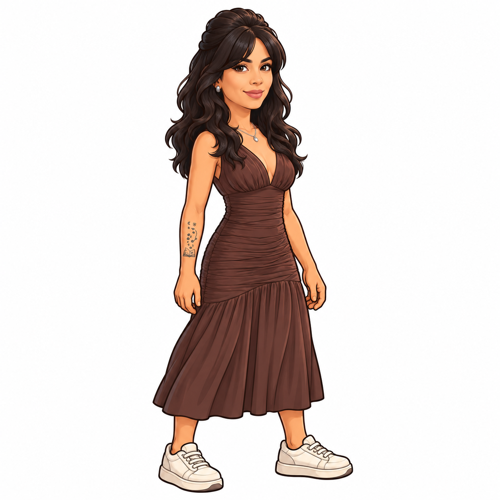
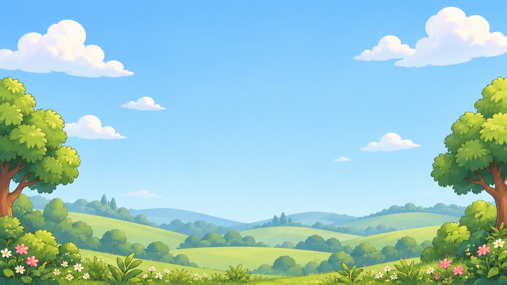
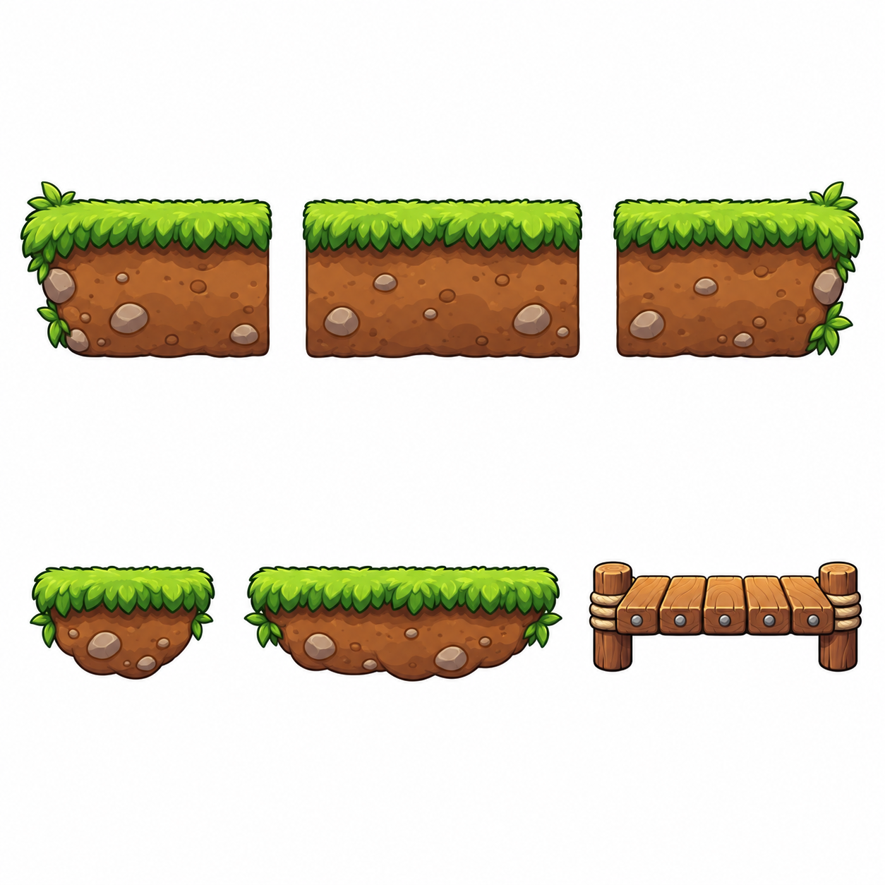
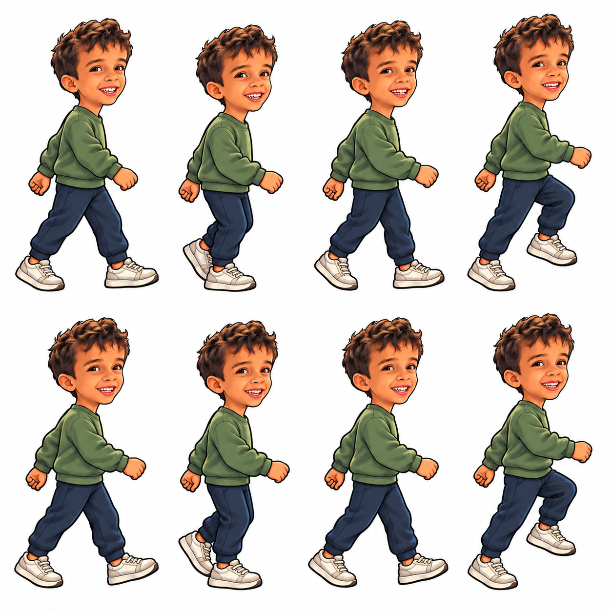

João Miguel, Luna, Lucas o Engenheiro e Samara, criados a partir das fotografias fornecidas. Artes para o jogo de plataforma 2D, com os mesmos personagens nos modos com e sem sensor.

Arte principal · corpo inteiro




Primeiro fundo de cenário. Personagens, plataformas e letras serão elementos separados no jogo.

Folha de propostas visuais. Recorte, transparência e encaixe ainda pendentes.

Estudo de poses; continuidade e alternância precisam de correção antes da animação final.